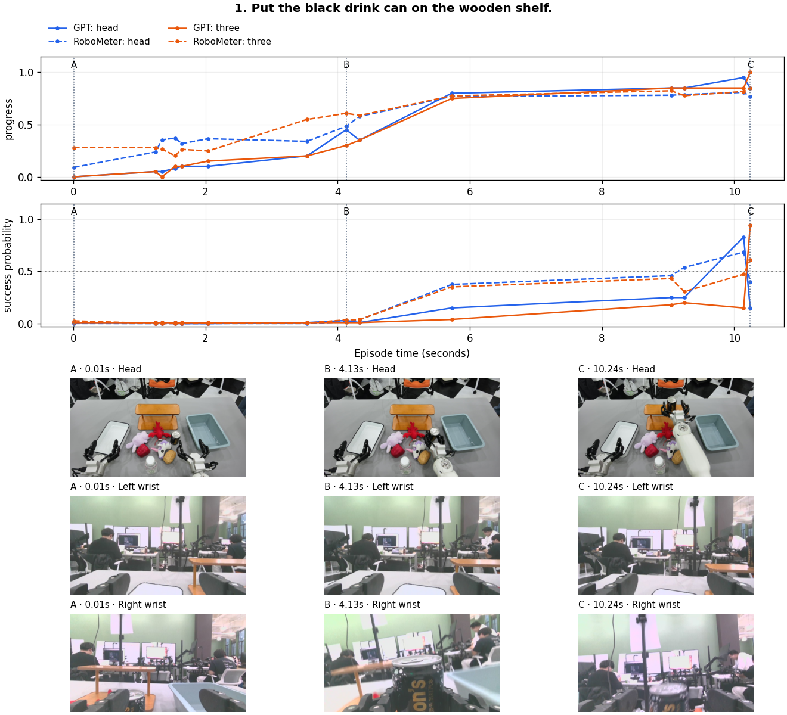
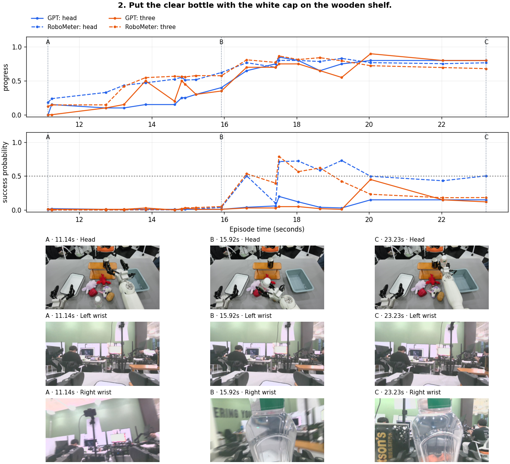
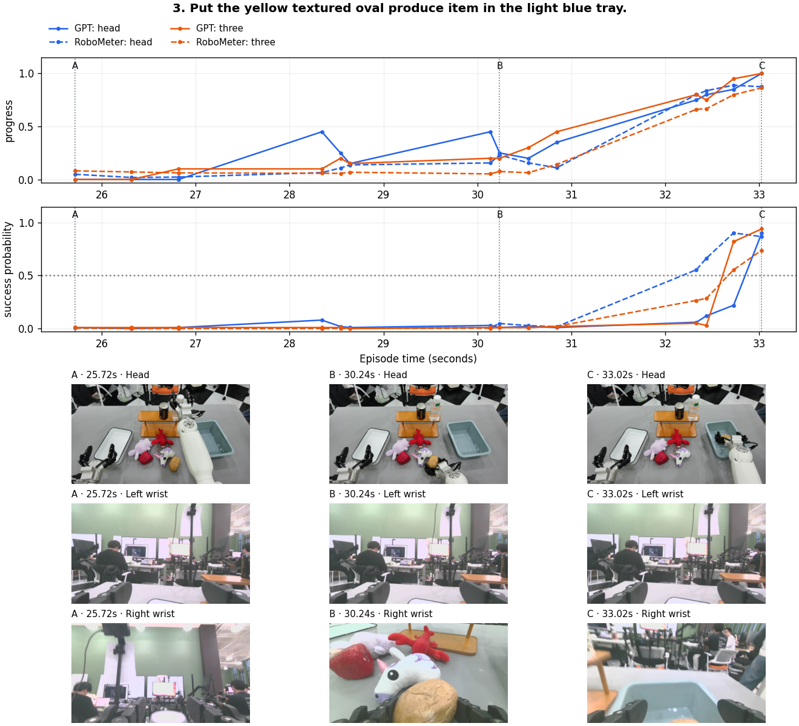
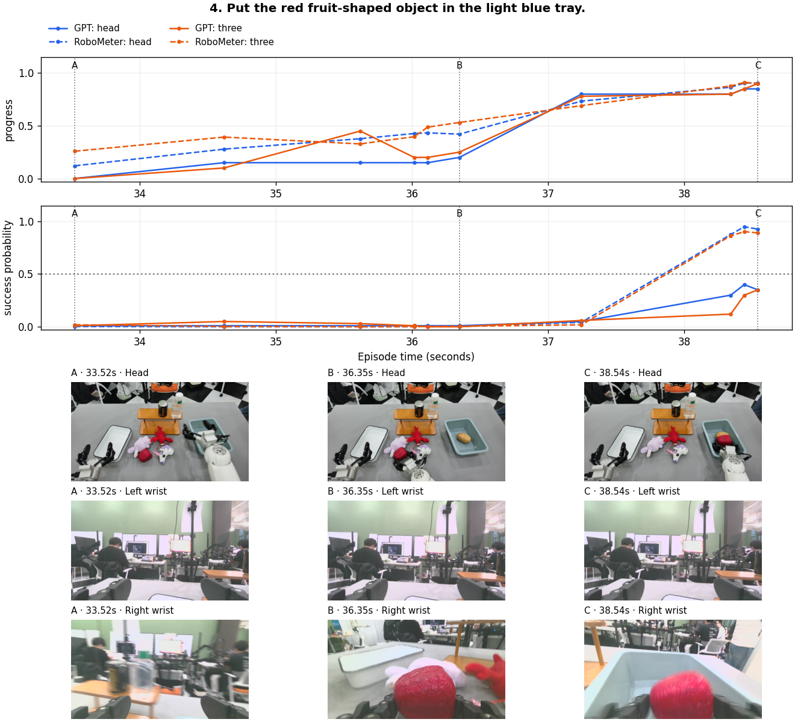
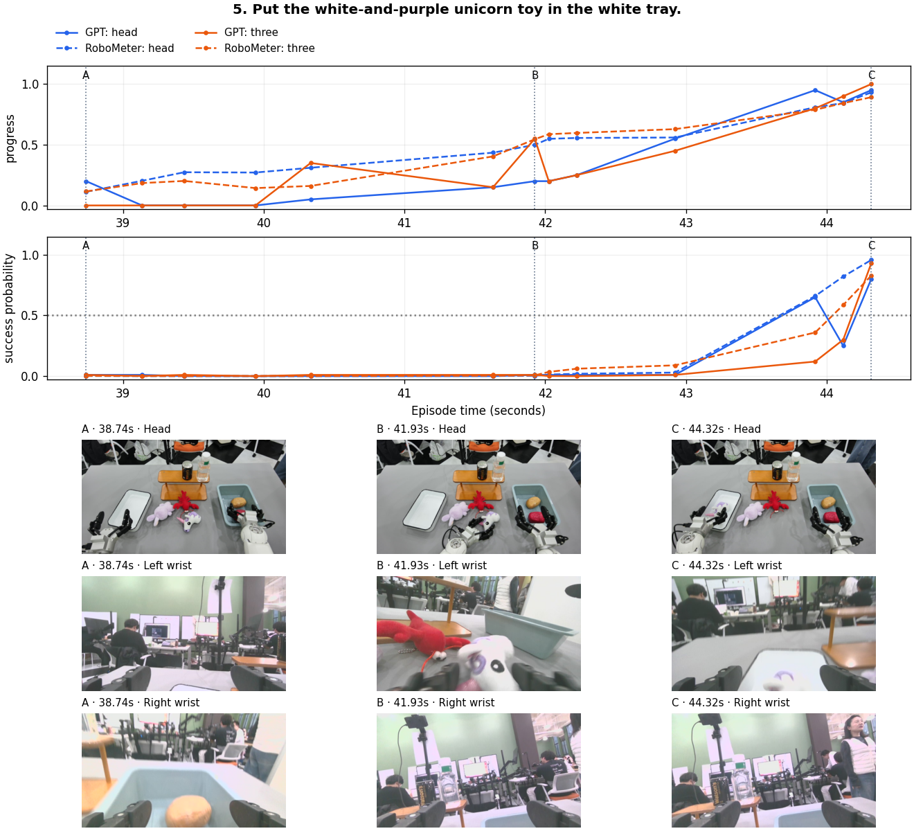
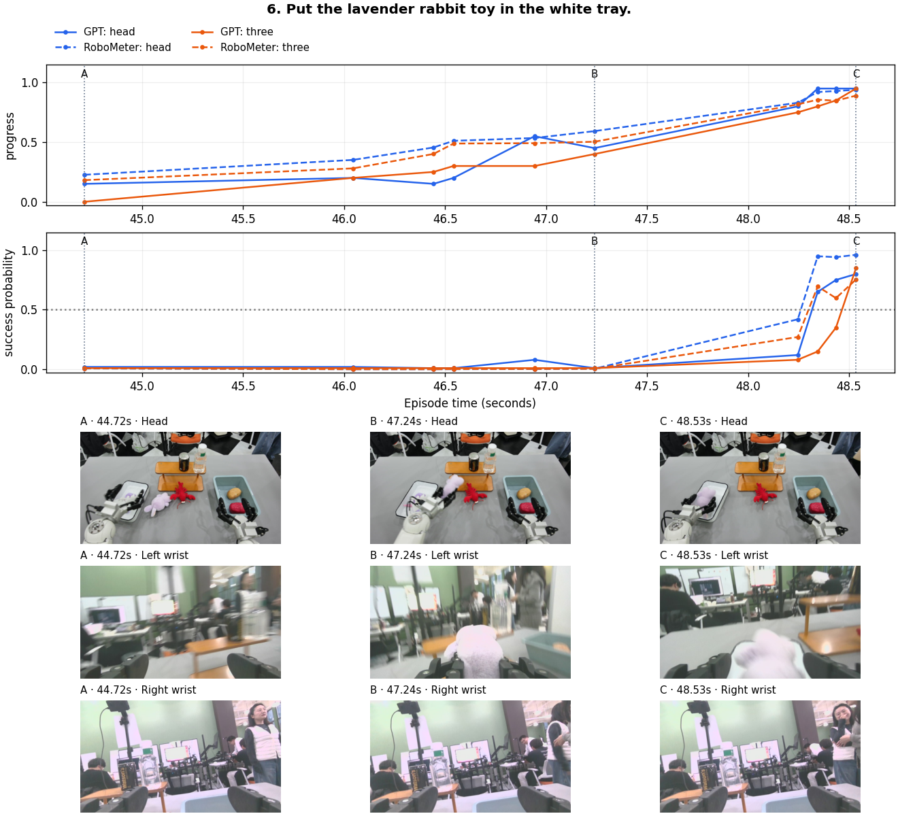
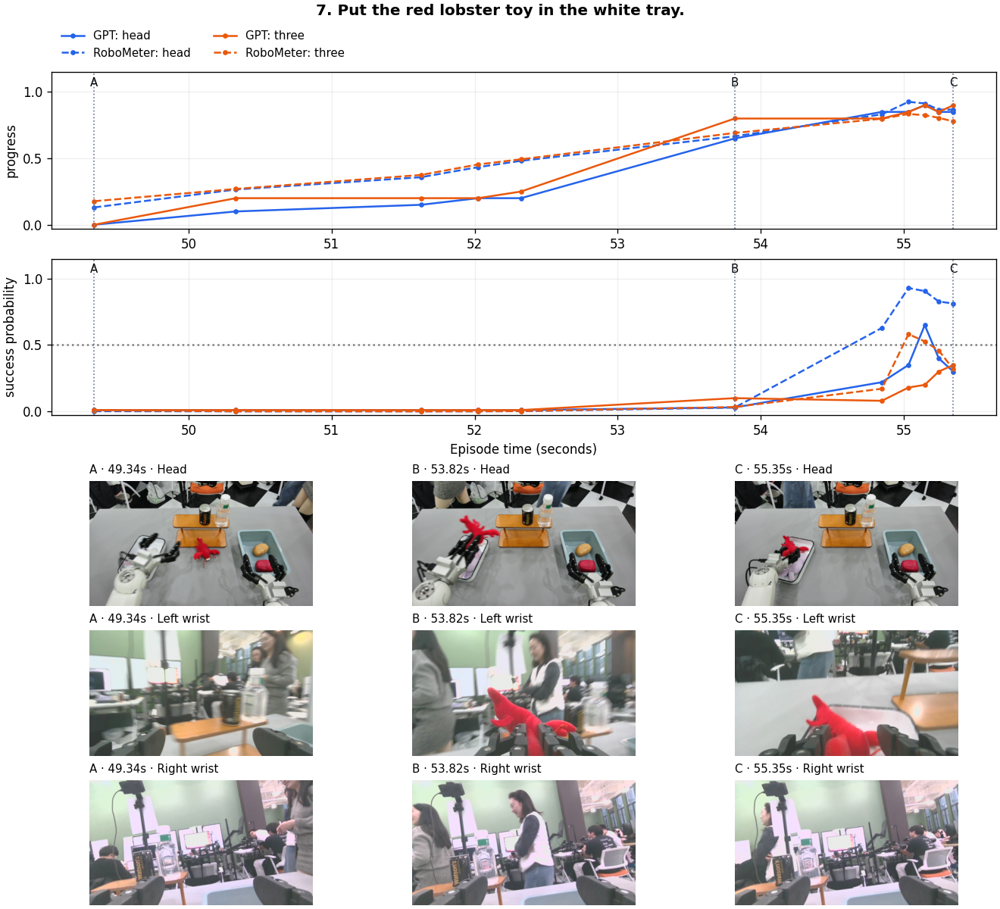
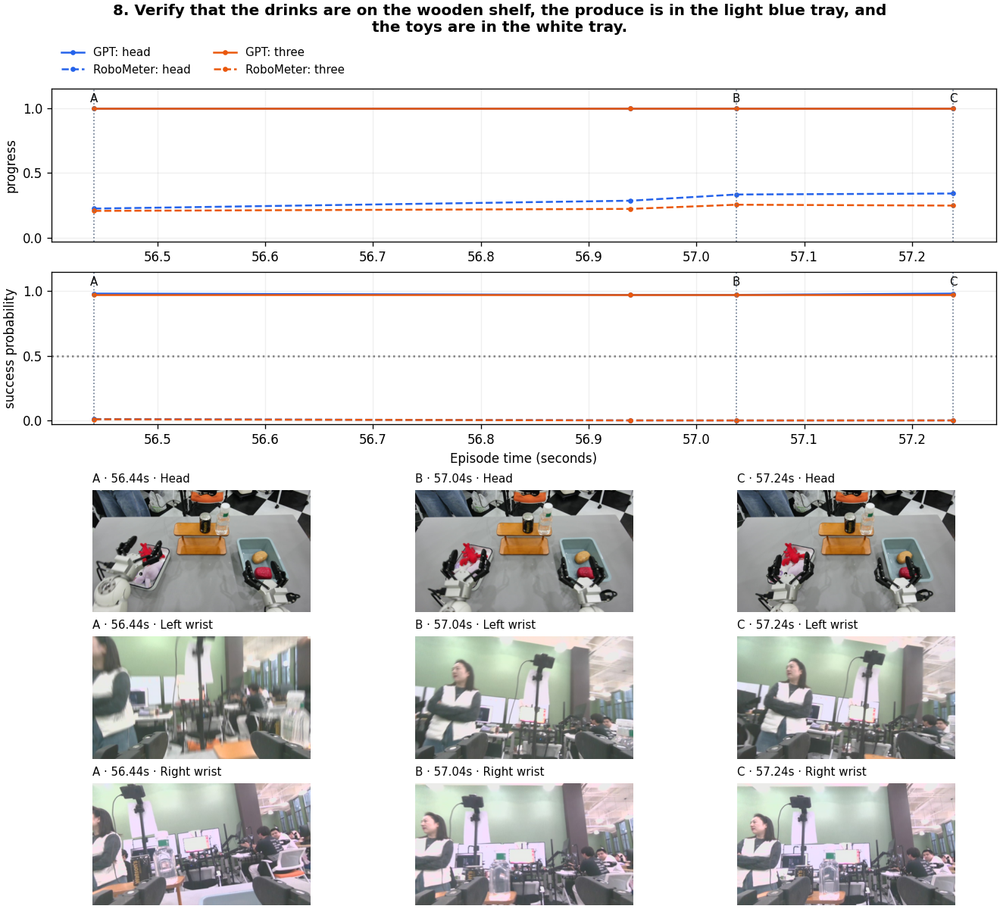

Run coverage: 914/914 camera/time-step judgments. GPT independently scored the same selected histories, without RoboMeter scores. GPT scores and probability estimates are not human ground truth or calibrated probabilities. Agreement does not establish accuracy. Three-camera images use horizontal tiles.
Complete: 190/190 judgments across 95 selected times. Blue: head only; orange: three cameras. Solid: GPT; dashed: RoboMeter. A/B/C match the image columns. Null GPT scores are gaps, not zero.

| Camera input | GPT final progress / success | RoboMeter at same time | GPT final evidence |
|---|---|---|---|
| head · 10.24s | 0.850 / 0.150 | 0.769 / 0.398 | The black can is visibly positioned over the wooden shelf and held by the right gripper, but the gripper remains closed around it, so release and stable placement are not yet confirmed. |
| three · 10.24s | 1.000 / 0.940 | 0.848 / 0.609 | The black can is upright on the wooden shelf at the last snapshot, with the gripper visibly opened around it. Its position remains consistent with the preceding snapshot, though the gripper partly obscures the base. |
Source annotation review notes: Task boundary: confirm release and next target in the original head/wrist images.
| Time / camera input | Progress / success | Status and evidence |
|---|---|---|
| 0.01s / head | 0.000 / 0.010 | not_success: The black drink can is visible on the tabletop in front of and to the right of the wooden shelf; the shelf surfaces appear empty, with no visible placement or release. |
| 0.01s / three | 0.000 / 0.010 | not_success: The black drink can is upright on the table in front of the wooden shelf, beside the toys. It is not visibly grasped or placed on either shelf surface. |
| 1.24s / head | 0.050 / 0.010 | not_success: The black drink can remains upright on the table in front of the wooden shelf. The right gripper is near the can, but no grasp, lift, or placement on the shelf is visible. |
| 1.24s / three | 0.050 / 0.010 | not_success: The black drink can is visibly on the tabletop to the right of the wooden shelf, not stably placed on either shelf tier; no release or shelf placement is shown. |
| 1.34s / head | 0.050 / 0.010 | not_success: The right gripper is near the black drink can, but the can remains upright on the tabletop in front of the wooden shelf. No secure grasp, lifting, or shelf placement is visible. |
| 1.34s / three | 0.000 / 0.010 | not_success: The black drink can remains visible on the tabletop beside the toys, while the wooden shelf behind it appears empty; no grasp or placement is visible. |
| 1.54s / head | 0.080 / 0.010 | not_success: The right gripper has approached the black can, which remains upright on the table in front of the wooden shelf. No secure grasp, lift, or placement on the shelf is visible. |
| 1.54s / three | 0.100 / 0.010 | not_success: The right gripper is approaching the black can, which remains upright on the table in front of the wooden shelf. No confirmed grasp, lift, or placement on the shelf is visible. |
| 1.64s / head | 0.100 / 0.000 | not_success: The right gripper has approached the black can, which remains upright on the table in front of the wooden shelf. No secure grasp, lift, or placement on the shelf is visible. |
| 1.64s / three | 0.100 / 0.010 | not_success: The right gripper has approached the black can, which remains upright on the table in front of the wooden shelf. No secure grasp, lift, or placement on the shelf is visible. |
| 2.04s / head | 0.100 / 0.000 | not_success: The right gripper has approached the black can, which remains upright on the table in front of the wooden shelf. No secure grasp, lift, or placement on the shelf is visible. |
| 2.04s / three | 0.150 / 0.010 | not_success: The right gripper has approached the black can, which remains upright on the table in front of the wooden shelf. No confirmed lift, transport, or released placement on the shelf is visible. |
| 3.54s / head | 0.200 / 0.010 | not_success: The right gripper has closed around the black can near its original tabletop position. No clear lift is visible, and the can is not on the wooden shelf; release and stable placement have not occurred. |
| 3.54s / three | 0.200 / 0.010 | not_success: The right gripper has approached and appears to close around the black can, which remains upright on the table in front of the wooden shelf. No lift, placement on the shelf, or release is visible. |
| 4.13s / head | 0.450 / 0.030 | not_success: The black drink can appears gripped by the right robot arm near the center-right, but it is still below and away from the wooden shelf; no release or stable placement on the shelf is visible. |
| 4.13s / three | 0.300 / 0.010 | not_success: The right gripper appears to hold the black drink can and has begun lifting it near its original position. The can remains in front of the wooden shelf; no release or stable placement on the shelf is visible. |
| 4.33s / head | 0.350 / 0.010 | not_success: The right gripper appears to have grasped and lifted the black drink can. The can remains held to the right of the wooden shelf; no placement or release onto the shelf is visible. |
| 4.33s / three | 0.350 / 0.010 | not_success: The right gripper holds the black drink can and has lifted it from its initial position. It remains beside and in front of the wooden shelf, still grasped; no release or stable placement on the shelf is visible. |
| 5.73s / head | 0.800 / 0.150 | not_success: The black can is visibly grasped above the wooden shelf, but the gripper has not released it and stable placement on the shelf is not shown. |
| 5.73s / three | 0.750 / 0.040 | not_success: The right gripper has lifted the black drink can and positioned it above the wooden shelf. It still visibly grips the can; release and stable placement are not shown. |
| 9.05s / head | 0.850 / 0.250 | not_success: The robot has lifted the black can and positioned it upright at the wooden shelf's top surface. The gripper still surrounds the can, obscuring its base; release and stable unsupported placement are not visible. |
| 9.05s / three | 0.850 / 0.180 | not_success: The robot has moved the black can upright to the wooden shelf, but the right gripper still surrounds it. The can's base is obscured, and release and stable unsupported placement are not visible. |
| 9.25s / head | 0.850 / 0.250 | not_success: The black can is visibly positioned over the wooden shelf, but the robotic gripper still appears to be holding it, so release and stable placement are not confirmed. |
| 9.25s / three | 0.850 / 0.200 | not_success: The black can has been lifted and positioned upright over the wooden shelf's upper surface. The right gripper still surrounds the can, and its base is partly obscured; release and stable unsupported placement are not visible. |
| 10.14s / head | 0.950 / 0.830 | success: The black drink can appears upright on the wooden shelf's top surface, with the gripper fingers opened on either side. The gripper remains close and partly obscures the base, so stable placement is not fully confirmed. |
| 10.14s / three | 0.850 / 0.150 | not_success: The black can is positioned on the upper wooden shelf, but the robot gripper is still visibly holding it, so release and stable placement are not confirmed. |
| 10.24s / head | 0.850 / 0.150 | not_success: The black can is visibly positioned over the wooden shelf and held by the right gripper, but the gripper remains closed around it, so release and stable placement are not yet confirmed. |
| 10.24s / three | 1.000 / 0.940 | success: The black can is upright on the wooden shelf at the last snapshot, with the gripper visibly opened around it. Its position remains consistent with the preceding snapshot, though the gripper partly obscures the base. |

| Camera input | GPT final progress / success | RoboMeter at same time | GPT final evidence |
|---|---|---|---|
| head · 23.23s | 0.800 / 0.150 | 0.766 / 0.504 | The robot has lifted the clear white-capped bottle and positioned it at the upper wooden shelf beside the can. The gripper still surrounds the bottle, and its base is obscured; release and stable placement are not visible. |
| three · 23.23s | 0.800 / 0.120 | 0.680 / 0.184 | The robot has lifted the clear white-capped bottle and positioned it upright beside the can at the wooden shelf. The gripper still surrounds the bottle; its base is obscured, and release or stable unsupported placement is not visible. |
Source annotation review notes: Task boundary: confirm release and next target in the original head/wrist images.
| Time / camera input | Progress / success | Status and evidence |
|---|---|---|
| 11.14s / head | 0.000 / 0.010 | not_success: The clear bottle with the white cap remains upright on the tabletop in the foreground, separate from the wooden shelf. No grasp or placement of the bottle is visible. |
| 11.14s / three | 0.000 / 0.010 | not_success: The clear bottle with the white cap is upright on the tabletop in the foreground, away from the wooden shelf. Neither gripper visibly holds it, and no placement on the shelf is shown. |
| 11.24s / head | 0.150 / 0.020 | not_success: The clear bottle with a white cap is visibly upright on the tabletop in the foreground, while the wooden shelf above remains unoccupied by it. No placement or release on the shelf is visible. |
| 11.24s / three | 0.000 / 0.010 | not_success: The clear bottle with the white cap remains upright on the tabletop in front of the wooden shelf. Neither gripper holds it, and no placement on the shelf is visible. |
| 12.73s / head | 0.100 / 0.010 | not_success: The clear bottle with the white cap is still visibly on the tabletop near the bottom center, while the wooden shelf above does not contain it. The robot arms are nearby but no placement or release is visible. |
| 12.73s / three | 0.100 / 0.010 | not_success: The clear bottle with the white cap remains upright on the tabletop in front of the wooden shelf. The right gripper has approached it, but no secure grasp, lift, or placement on the shelf is visible. |
| 13.23s / head | 0.100 / 0.010 | not_success: The right gripper has approached the clear white-capped bottle, which remains upright on the table in front of the shelf. No lift, transfer, or placement on the wooden shelf is visible; the bottle's lower portion is partly obscured by the gripper. |
| 13.23s / three | 0.150 / 0.010 | not_success: The right gripper has approached the clear white-capped bottle, which remains upright on the table in front of the wooden shelf. No secure grasp, lift, or placement on the shelf is visible. |
| 13.83s / head | 0.150 / 0.010 | not_success: The clear white-capped bottle remains upright on the table in front of the wooden shelf. The right gripper has approached the bottle, partially obscuring its lower body, but no lift or placement on the shelf is visible. |
| 13.83s / three | 0.500 / 0.030 | not_success: The clear bottle with white cap is visibly being held close to the robot at the last timestep, while the wooden shelf remains separate in the head view and the bottle is not visibly released or stably placed on it. |
| 14.63s / head | 0.150 / 0.010 | not_success: The right gripper is positioned around the clear white-capped bottle near the front of the table. The bottle has not visibly been lifted or moved to the wooden shelf; a secure grasp is uncertain. |
| 14.63s / three | 0.200 / 0.001 | not_success: The right gripper is positioned around the clear white-capped bottle near the front of the table. A secure grasp or lift is not clearly established. The bottle remains away from the wooden shelf, with no placement or release visible. |
| 14.83s / head | 0.250 / 0.010 | not_success: The right gripper appears to hold and slightly lift the clear white-capped bottle near the front of the table. The bottle remains away from the wooden shelf; no placement or release is visible. |
| 14.83s / three | 0.500 / 0.020 | not_success: The clear bottle with white cap is visibly being held near the bottom of the workspace, while the wooden shelf remains occupied only by a black can; the bottle is not released or stably placed on the shelf. |
| 14.93s / head | 0.250 / 0.010 | not_success: The right gripper appears to hold and begin lifting the clear white-capped bottle near the front of the table. It remains far from the wooden shelf; no placement or release on the shelf is visible. |
| 14.93s / three | 0.450 / 0.030 | not_success: The clear bottle with white cap is visibly being held close to the right-wrist camera, while the wooden shelf still visibly contains only the black can. No release or stable placement on the shelf is shown. |
| 15.22s / head | 0.300 / 0.010 | not_success: The right gripper appears to hold and slightly lift the clear white-capped bottle near the front of the table. The bottle remains well away from the wooden shelf; no placement or release on the shelf is visible. |
| 15.22s / three | 0.300 / 0.010 | not_success: The right gripper appears to hold the clear white-capped bottle near its original tabletop position. It has not reached the wooden shelf; no release or stable shelf placement is visible. |
| 15.92s / head | 0.400 / 0.010 | not_success: The right gripper has lifted the clear white-capped bottle and is moving it toward the wooden shelf. The bottle remains held in front of the shelf; no release or placement on the shelf is visible. |
| 15.92s / three | 0.350 / 0.010 | not_success: The right gripper has grasped and lifted the clear white-capped bottle toward the wooden shelf. At the last snapshot it remains held in front of the shelf; no release or placement on the shelf is visible. |
| 16.62s / head | 0.650 / 0.040 | not_success: The robot has lifted the clear white-capped bottle and moved it to the wooden shelf area. The bottle remains held in the gripper; its base is partly occluded, and release or stable placement on the shelf is not visible. |
| 16.62s / three | 0.700 / 0.030 | not_success: The robot has lifted the clear white-capped bottle and moved it toward the wooden shelf. At the last snapshot it remains held in the gripper; its base is partly occluded, and release or stable placement on the shelf is not visible. |
| 17.42s / head | 0.750 / 0.060 | not_success: The robot has lifted the clear white-capped bottle and moved it to the left side of the wooden shelf. The gripper still holds it; its base is obscured, and release or stable placement is not visible. |
| 17.42s / three | 0.700 / 0.030 | not_success: The right gripper has lifted the clear white-capped bottle and moved it to the wooden shelf beside the can. It still visibly holds the bottle; release and stable shelf placement are not shown, and the base is partly occluded. |
| 17.52s / head | 0.850 / 0.200 | not_success: The clear bottle with white cap is positioned upright on the upper wooden shelf, but the robot gripper is still visibly holding it, so release and stable placement are not confirmed. |
| 17.52s / three | 0.750 / 0.050 | not_success: The robot has lifted the clear white-capped bottle and moved it to the wooden shelf. At the last snapshot the gripper still surrounds the bottle; its base is partly obscured, and release or stable unsupported placement is not visible. |
| 18.05s / head | 0.800 / 0.120 | not_success: The robot has lifted the clear white-capped bottle and moved it to the wooden shelf beside the can. The gripper still surrounds the bottle, and its base is obscured; release and stable placement are not visible. |
| 18.05s / three | 0.750 / 0.050 | not_success: The clear white-capped bottle has been lifted and moved to the wooden shelf beside the black can, but remains held in the gripper. Its base is partly occluded; release and stable placement are not visible. |
| 18.64s / head | 0.650 / 0.040 | not_success: The gripper has lifted the clear white-capped bottle and moved it near the wooden shelf, but still visibly holds it. No release or stable placement on the shelf is shown; the gripper partially obscures the bottle's base. |
| 18.64s / three | 0.650 / 0.020 | not_success: The robot has grasped and lifted the clear white-capped bottle and moved it near the wooden shelf. At the last snapshot it remains held in the gripper; no release or stable placement on the shelf is visible. |
| 19.24s / head | 0.750 / 0.030 | not_success: The clear bottle with the white cap is visibly still held by the robot above and to the right of the wooden shelf, not released or stably placed on it. |
| 19.24s / three | 0.550 / 0.010 | not_success: The robot has lifted the correct clear bottle with the white cap, but at the last snapshot it remains held in the gripper to the right of the wooden shelf. No release or stable placement on the shelf is visible. |
| 20.04s / head | 0.800 / 0.150 | not_success: The clear bottle with white cap is visibly held by the gripper above the wooden shelf, but it has not been visibly released or shown stably resting on the shelf. |
| 20.04s / three | 0.900 / 0.450 | not_success: The clear bottle with white cap is visibly positioned over/on the right side of the wooden shelf, but the robot gripper and arm still obscure its base and contact, so release and stable placement are not confirmed. |
| 22.03s / head | 0.800 / 0.150 | not_success: The clear white-capped bottle is upright at the right end of the wooden shelf, beside the can, but remains enclosed by the gripper. Its base is obscured, and release or stable unsupported placement is not visible. |
| 22.03s / three | 0.800 / 0.150 | not_success: The clear white-capped bottle has been lifted and positioned upright at the wooden shelf beside the can. The gripper still surrounds the bottle, and its base is obscured; release and stable placement are not demonstrated. |
| 23.23s / head | 0.800 / 0.150 | not_success: The robot has lifted the clear white-capped bottle and positioned it at the upper wooden shelf beside the can. The gripper still surrounds the bottle, and its base is obscured; release and stable placement are not visible. |
| 23.23s / three | 0.800 / 0.120 | not_success: The robot has lifted the clear white-capped bottle and positioned it upright beside the can at the wooden shelf. The gripper still surrounds the bottle; its base is obscured, and release or stable unsupported placement is not visible. |

| Camera input | GPT final progress / success | RoboMeter at same time | GPT final evidence |
|---|---|---|---|
| head · 33.02s | 1.000 / 0.900 | 0.875 / 0.867 | The yellow textured oval produce item is visibly inside the light blue tray at the final time step, with the gripper beside it rather than clearly holding it; placement appears stable. |
| three · 33.02s | 1.000 / 0.940 | 0.864 / 0.738 | The yellow textured oval item was carried into the light blue tray. In the final snapshot, the gripper is open and the item appears resting inside the tray, partly obscured by the gripper; prolonged stability is not shown. |
Source annotation review notes: Task boundary: confirm release and next target in the original head/wrist images.
| Time / camera input | Progress / success | Status and evidence |
|---|---|---|
| 25.72s / head | 0.000 / 0.010 | not_success: The yellow textured oval produce item is visibly still on the tabletop below the other objects, while the light blue tray at right appears empty. |
| 25.72s / three | 0.000 / 0.010 | not_success: The yellow textured oval item remains on the tabletop beside the toy unicorn, outside the light blue tray. No grasp or placement is visible. |
| 26.32s / head | 0.000 / 0.000 | not_success: The yellow textured oval item remains on the tabletop beside the other produce, not inside the light blue tray. The robot arm partially occludes the tray, but no placement or release is visible. |
| 26.32s / three | 0.000 / 0.010 | not_success: The yellow textured oval item remains on the tabletop beside the other objects, outside the light blue tray. No grasp or placement is visible; the robot arm partially occludes the tray. |
| 26.82s / head | 0.000 / 0.010 | not_success: The yellow textured oval item remains on the tabletop beside the toy unicorn, outside the light blue tray. The robot gripper is open and not holding it; the arm partly occludes the tray. |
| 26.82s / three | 0.100 / 0.010 | not_success: The yellow textured oval produce item is still visibly on the tabletop below the other objects, while the light blue tray at upper right appears empty; the robot arm partially occludes the tray but no placement or release is visible. |
| 28.34s / head | 0.450 / 0.080 | not_success: The yellow textured oval item remains visible near the lower center-right, with the robot gripper positioned around it. The light blue tray is visible and appears empty; stable placement is not shown. |
| 28.34s / three | 0.100 / 0.010 | not_success: The yellow textured oval item remains on the tabletop beside the white toy, outside the empty light blue tray. The right gripper is approaching or contacting the item, but no lift, transfer, or release is visible. |
| 28.54s / head | 0.250 / 0.020 | not_success: The yellow textured oval item remains on the tabletop near the center-right, with the gripper positioned around it, but it is not visibly lifted or placed in the light blue tray. |
| 28.54s / three | 0.200 / 0.010 | not_success: The right gripper has approached the yellow textured oval item, which remains on the tabletop beside the unicorn. A secure grasp is not visible, and the light blue tray is empty; no lift, transfer, or release is shown. |
| 28.64s / head | 0.150 / 0.010 | not_success: The right gripper has approached the yellow textured oval item, which remains on the tabletop beside the purple toy. A secure grasp or lift is not visible, and the light blue tray is empty. |
| 28.64s / three | 0.150 / 0.000 | not_success: The right gripper has approached the yellow textured oval item, which remains on the tabletop outside the empty light blue tray. No secure grasp, lift, or placement is visible. |
| 30.14s / head | 0.450 / 0.030 | not_success: The yellow textured oval produce item is still visible on the tabletop near the robot gripper, while the light blue tray remains empty. The gripper appears to be contacting or approaching the item, but no lift, transport, or release into the tray is visible. |
| 30.14s / three | 0.200 / 0.010 | not_success: The right gripper is positioned around the yellow textured oval item beside the unicorn, still outside the light blue tray. The tray is empty; a secure lift, transfer, and release are not visible. |
| 30.24s / head | 0.250 / 0.010 | not_success: The right gripper surrounds the yellow textured oval item near its original tabletop position, but a secure grasp or lift is unclear. The light blue tray remains empty; no placement or release is visible. |
| 30.24s / three | 0.200 / 0.010 | not_success: The yellow textured oval produce item is still visible on the table near the gripper, while the light blue tray remains empty. No release or stable placement is visible. |
| 30.54s / head | 0.200 / 0.020 | not_success: The yellow textured oval item is still visible on the tabletop near the robot gripper, while the light blue tray remains empty. The gripper appears to be approaching or contacting it, but no placement or release is visible. |
| 30.54s / three | 0.300 / 0.010 | not_success: The right gripper surrounds the yellow textured oval item and appears to begin lifting it near the other objects. The light blue tray remains empty; no transport into the tray, release, or stable placement is visible. |
| 30.84s / head | 0.350 / 0.010 | not_success: The right gripper appears to hold and lift the yellow textured oval item beside the light blue tray. The tray remains empty; transport into it and release have not occurred. |
| 30.84s / three | 0.450 / 0.020 | not_success: The yellow textured oval produce item is visibly grasped by the robot near the lower center, but it remains outside the light blue tray, which appears empty at the right; release and stable placement are not visible. |
| 32.33s / head | 0.750 / 0.060 | not_success: The yellow textured oval item has been lifted and moved over the light blue tray, but remains visibly held by the right gripper. Release and stable placement in the tray are not shown. |
| 32.33s / three | 0.800 / 0.050 | not_success: The robot has lifted the yellow textured oval item and moved it over the light blue tray. The gripper still holds it at the last snapshot; release and stable placement are not visible. |
| 32.44s / head | 0.800 / 0.120 | not_success: The yellow textured oval item has been lifted and moved over the light blue tray, but remains visibly held by the gripper. Release and stable placement are not shown. |
| 32.44s / three | 0.750 / 0.030 | not_success: The robot has lifted the yellow textured oval item and moved it over the light blue tray. At the last snapshot it remains held between the gripper fingers; release and stable placement are not visible. |
| 32.73s / head | 0.850 / 0.220 | not_success: The yellow textured oval item has been lifted and lowered into the light blue tray, but the gripper remains around it. Release and stable placement are not visibly confirmed. |
| 32.73s / three | 0.950 / 0.820 | success: The yellow textured oval item has been moved into the light blue tray, and the gripper appears open around it after lowering. The item is partly cut off in the wrist view, so stable resting placement is not fully confirmed. |
| 33.02s / head | 1.000 / 0.900 | success: The yellow textured oval produce item is visibly inside the light blue tray at the final time step, with the gripper beside it rather than clearly holding it; placement appears stable. |
| 33.02s / three | 1.000 / 0.940 | success: The yellow textured oval item was carried into the light blue tray. In the final snapshot, the gripper is open and the item appears resting inside the tray, partly obscured by the gripper; prolonged stability is not shown. |

| Camera input | GPT final progress / success | RoboMeter at same time | GPT final evidence |
|---|---|---|---|
| head · 38.54s | 0.850 / 0.350 | 0.905 / 0.926 | The robot has moved the red fruit-shaped object into the light blue tray, but the gripper still surrounds it. Release and stable placement are not clearly visible. |
| three · 38.54s | 0.900 / 0.350 | 0.901 / 0.891 | The red fruit-shaped object is visibly inside the light blue tray, but the robot gripper still appears to be contacting or holding it, so release and stable placement are not clearly confirmed. |
Source annotation review notes: Task boundary: confirm release and next target in the original head/wrist images.
| Time / camera input | Progress / success | Status and evidence |
|---|---|---|
| 33.52s / head | 0.000 / 0.010 | not_success: The red fruit-shaped object is resting on the tabletop beside the purple toy, outside the light blue tray on the right. It is not visibly grasped or placed in the tray. |
| 33.52s / three | 0.000 / 0.010 | not_success: The red fruit-shaped object is visibly resting on the table beside the plush toys, outside the light blue tray. The robot arm partially obscures the tray, but the target object is clearly not in it. |
| 34.62s / head | 0.150 / 0.010 | not_success: The gripper has approached the red fruit-shaped object, which remains partly visible on the tabletop beneath it. The light blue tray contains a tan object, but the red fruit has not been visibly placed inside; a secure grasp is unclear. |
| 34.62s / three | 0.100 / 0.050 | not_success: The light blue tray visibly contains a tan object, while the red fruit-shaped object remains on the tabletop near the gripper; no stable placement of the red object is visible. |
| 35.62s / head | 0.150 / 0.010 | not_success: The gripper is approaching the red fruit-shaped object, which remains on the tabletop beside the plush toys. The light blue tray contains a tan object; no grasp, transfer, or release of the red fruit is visible. |
| 35.62s / three | 0.450 / 0.030 | not_success: The red fruit-shaped object is visibly held near the gripper in the close-up view, while the light blue tray contains a different tan object. The red object is not visibly released or stably placed in the tray. |
| 36.01s / head | 0.150 / 0.010 | not_success: The gripper is positioned beside the red fruit-shaped object, which remains on the tabletop outside the light blue tray. No secure grasp or lift is visible; the tray contains only a tan object. |
| 36.01s / three | 0.200 / 0.010 | not_success: The right gripper is positioned around the red fruit-shaped object beside the plush toys, but a secure grasp or lift is not confirmed. The object remains outside the light blue tray, which visibly contains a yellow-brown object. |
| 36.11s / head | 0.150 / 0.010 | not_success: The right gripper is positioned around the red fruit-shaped object, which remains on the tabletop outside the light blue tray. A secure grasp or lift is not visible; the tray contains only a yellow-brown object. |
| 36.11s / three | 0.200 / 0.000 | not_success: The right gripper is positioned around the red fruit-shaped object, which remains at the tabletop outside the light blue tray. A secure grasp or lift is not established; the tray contains only a yellow object, with no red fruit placement or release visible. |
| 36.35s / head | 0.200 / 0.010 | not_success: The gripper is positioned around the red fruit-shaped object on the table, but a secure grasp or lift is not visible. The light blue tray contains only a tan object; the red fruit has not been placed inside. |
| 36.35s / three | 0.250 / 0.000 | not_success: The right gripper surrounds the red fruit-shaped object near its original tabletop location, but a secure lift is unclear. The light blue tray remains separate and contains only a yellow object; no transfer or release of the red fruit is visible. |
| 37.24s / head | 0.800 / 0.050 | not_success: The red fruit-shaped object is visibly held by the gripper above the light blue tray, but it has not been released or shown stably placed inside the tray. |
| 37.24s / three | 0.780 / 0.060 | not_success: The red fruit-shaped object is visibly held by the gripper above/near the light blue tray, but it has not been released or shown stably inside; the tray already contains another tan object. |
| 38.34s / head | 0.800 / 0.300 | not_success: The red fruit-shaped object has been lifted and moved into the light blue tray, beside the yellow object. The gripper remains around it at the last frame, so release and stable placement are not confirmed. |
| 38.34s / three | 0.800 / 0.120 | not_success: The red fruit-shaped object has been lifted and moved inside the light blue tray, but remains between the right gripper fingers. Release and stable placement are not visible. |
| 38.44s / head | 0.850 / 0.400 | not_success: The red fruit-shaped object has been lifted and moved inside the light blue tray. The gripper remains around it at the last frame, obscuring support beneath it; release and stable placement are not clearly visible. |
| 38.44s / three | 0.850 / 0.300 | not_success: The robot has lifted the red fruit-shaped object and lowered it inside the light blue tray. The gripper remains around the object at the last snapshot; release and stable placement are not clearly visible. |
| 38.54s / head | 0.850 / 0.350 | not_success: The robot has moved the red fruit-shaped object into the light blue tray, but the gripper still surrounds it. Release and stable placement are not clearly visible. |
| 38.54s / three | 0.900 / 0.350 | not_success: The red fruit-shaped object is visibly inside the light blue tray, but the robot gripper still appears to be contacting or holding it, so release and stable placement are not clearly confirmed. |

| Camera input | GPT final progress / success | RoboMeter at same time | GPT final evidence |
|---|---|---|---|
| head · 44.32s | 0.950 / 0.800 | 0.931 / 0.957 | The white-and-purple unicorn has been moved into the white tray and appears to rest inside it. The gripper appears open but remains close to and partly obscures the toy, leaving release and stable placement slightly uncertain. |
| three · 44.32s | 1.000 / 0.930 | 0.892 / 0.828 | The white-and-purple unicorn is lying inside the white tray at the last step, with the left gripper visibly opened around it. Placement appears supported by the tray, though the gripper partly obscures the toy and no later settling view is provided. |
Source annotation review notes: Task boundary: confirm release and next target in the original head/wrist images.
| Time / camera input | Progress / success | Status and evidence |
|---|---|---|
| 38.74s / head | 0.200 / 0.010 | not_success: The white-and-purple unicorn is visibly lying on the table beside the white tray, while the tray appears empty; placement and stable release are not shown. |
| 38.74s / three | 0.000 / 0.010 | not_success: The white-and-purple unicorn is lying on the tabletop outside the white tray. The tray appears empty, and neither gripper is holding the unicorn. |
| 39.14s / head | 0.000 / 0.010 | not_success: The white-and-purple unicorn is visibly still on the tabletop near the center, while the white tray on the left appears empty; no placement is visible. |
| 39.14s / three | 0.000 / 0.001 | not_success: The white-and-purple unicorn remains on the tabletop between the other toys and the blue tray. The white tray on the left is empty, and neither gripper holds the unicorn. |
| 39.44s / head | 0.000 / 0.001 | not_success: The white-and-purple unicorn remains on the tabletop near the center, outside the empty white tray on the left. Neither gripper holds the unicorn; no placement is visible. |
| 39.44s / three | 0.000 / 0.010 | not_success: At the last snapshot, the white-and-purple unicorn remains on the tabletop beside the other toys, outside the empty white tray. Neither gripper is holding it. |
| 39.94s / head | 0.000 / 0.000 | not_success: The white-and-purple unicorn remains on the tabletop between the trays. The white tray is empty, and neither gripper is holding the unicorn. |
| 39.94s / three | 0.000 / 0.000 | not_success: The white-and-purple unicorn remains on the tabletop outside the empty white tray at the final time step. Neither gripper visibly holds it; no placement has occurred. |
| 40.33s / head | 0.050 / 0.000 | not_success: The white-and-purple unicorn remains on the tabletop outside the empty white tray. The left gripper is approaching the toys, but no grasp, lift, or placement is visible. |
| 40.33s / three | 0.350 / 0.010 | not_success: The white-and-purple unicorn is still visibly on the tabletop outside the white tray, while the gripper is positioned over it; no lift, transfer, release, or stable placement in the tray is visible. |
| 41.63s / head | 0.150 / 0.000 | not_success: The left gripper has approached the white-and-purple unicorn, which remains on the tabletop beside the empty white tray. No secure grasp, lift, or placement is visible. |
| 41.63s / three | 0.150 / 0.010 | not_success: The left gripper has approached and surrounds part of the white-and-purple unicorn, which remains on the tabletop. No secure lift is visible, and the white tray on the left is empty. |
| 41.93s / head | 0.200 / 0.010 | not_success: The left gripper is closing around the white-and-purple unicorn, which remains outside the empty white tray. A secure lift is unclear; no transport, release, or placement in the tray is visible. |
| 41.93s / three | 0.550 / 0.010 | not_success: The white-and-purple unicorn is visibly grasped between the robot grippers near the bottom of the view, while the white tray on the left remains empty. It has not been released or stably placed in the tray. |
| 42.03s / head | 0.200 / 0.010 | not_success: The left gripper is contacting or closing around the white-and-purple unicorn on the tabletop. A secure lift is not visible, and the white tray on the left remains empty; no placement or release has occurred. |
| 42.03s / three | 0.200 / 0.001 | not_success: The left gripper is closing around the white-and-purple unicorn on the tabletop. A secure grasp or lift is not yet clear; the white tray remains empty, with no transport or release into it visible. |
| 42.22s / head | 0.250 / 0.010 | not_success: The left gripper appears to close around the white-and-purple unicorn, which remains near the center of the table. The white tray on the left is empty; no transport into the tray or released placement is visible. |
| 42.22s / three | 0.250 / 0.000 | not_success: The left gripper has closed around the white-and-purple unicorn, but a secure lift is not yet clear. The toy remains outside the empty white tray; no transfer or release is visible. |
| 42.92s / head | 0.550 / 0.010 | not_success: The left gripper has lifted the white-and-purple unicorn and is moving it toward the white tray. The toy remains held above the table near the tray; no release or placement is visible, and the tray is empty. |
| 42.92s / three | 0.450 / 0.010 | not_success: The left gripper holds the white-and-purple unicorn lifted above the table and moving toward the white tray. The tray remains empty; no release or placement is visible. |
| 43.92s / head | 0.950 / 0.650 | success: The white-and-purple unicorn is visibly inside the white tray at the last time step, though the gripper still appears to be contacting or holding it, so release and stable placement are somewhat uncertain. |
| 43.92s / three | 0.800 / 0.120 | not_success: The correct unicorn has been lifted and moved into the white tray area, but the left gripper still appears closed around it. Release and stable placement are not visible. |
| 44.12s / head | 0.850 / 0.250 | not_success: The robot has moved the white-and-purple unicorn into the white tray, but the gripper still surrounds the toy. Release and stable placement are not visibly confirmed. |
| 44.12s / three | 0.900 / 0.300 | not_success: The white-and-purple unicorn is visibly positioned over/inside the white tray, but the robot gripper still appears to be contacting or holding it, so release and stable placement are not confirmed. |
| 44.32s / head | 0.950 / 0.800 | success: The white-and-purple unicorn has been moved into the white tray and appears to rest inside it. The gripper appears open but remains close to and partly obscures the toy, leaving release and stable placement slightly uncertain. |
| 44.32s / three | 1.000 / 0.930 | success: The white-and-purple unicorn is lying inside the white tray at the last step, with the left gripper visibly opened around it. Placement appears supported by the tray, though the gripper partly obscures the toy and no later settling view is provided. |

| Camera input | GPT final progress / success | RoboMeter at same time | GPT final evidence |
|---|---|---|---|
| head · 48.53s | 0.950 / 0.800 | 0.940 / 0.961 | The lavender rabbit has been moved into the white tray and appears to rest inside it with the gripper opened around it. The gripper remains close and partly obscures the toy, so full release and stable placement are not completely clear. |
| three · 48.53s | 0.950 / 0.850 | 0.891 / 0.754 | The lavender rabbit is visibly inside the white tray in the final head-camera view. The gripper is positioned at the tray edges and appears to have released it, though the close-up partially occludes the contact points. |
Source annotation review notes: Task boundary: confirm release and next target in the original head/wrist images.
| Time / camera input | Progress / success | Status and evidence |
|---|---|---|
| 44.72s / head | 0.150 / 0.020 | not_success: The lavender rabbit is visibly lying on the tabletop just outside the white tray; it is not stably inside the tray. The tray interior is partly occluded by the robot arm, leaving slight uncertainty about its contents. |
| 44.72s / three | 0.000 / 0.010 | not_success: The lavender rabbit toy is lying on the tabletop beside the white tray, outside its rim. No grasp or placement in the tray is visible. |
| 46.04s / head | 0.200 / 0.020 | not_success: The lavender rabbit remains on the tabletop beside the white tray. The left gripper is positioned around it, but no lift, placement inside the tray, or release is visible. |
| 46.04s / three | 0.200 / 0.010 | not_success: The lavender rabbit remains on the tabletop beside the white tray. The left gripper is positioned around it, but a secure grasp or lift is unclear, and no placement or release into the tray is visible. |
| 46.44s / head | 0.150 / 0.010 | not_success: The lavender rabbit remains on the tabletop beside the white tray. The left gripper is positioned around it, partially obscuring contact, but no lift or placement in the tray is visible. |
| 46.44s / three | 0.250 / 0.010 | not_success: The left gripper is positioned around the lavender rabbit beside the white tray. The rabbit remains outside the tray; a secure lift, release, and stable placement are not visible. |
| 46.54s / head | 0.200 / 0.010 | not_success: The left gripper surrounds part of the lavender rabbit beside the white tray, but the toy remains outside the tray. A secure grasp is partly obscured; no release or stable placement in the tray is visible. |
| 46.54s / three | 0.300 / 0.010 | not_success: The left gripper is closing around the lavender rabbit beside the white tray. The toy remains outside the tray; lifting, release, and stable placement inside are not visible. |
| 46.94s / head | 0.550 / 0.080 | not_success: The lavender rabbit is still visibly between the white tray and the red toy, with the robot gripper contacting it; only a small lavender portion appears inside the tray, while most of the rabbit remains outside, so stable placement is not shown. |
| 46.94s / three | 0.300 / 0.010 | not_success: The left gripper appears to hold and begin lifting the lavender rabbit beside the white tray. The toy remains outside the tray, with no release or stable placement visible. |
| 47.24s / head | 0.450 / 0.010 | not_success: The left gripper has lifted the lavender rabbit above the table beside the white tray. The rabbit remains held outside the tray; no release or stable placement is visible. |
| 47.24s / three | 0.400 / 0.010 | not_success: The left gripper has grasped and lifted the lavender rabbit above the tabletop beside the white tray. The toy remains held outside the tray; no release or stable placement is visible. |
| 48.25s / head | 0.800 / 0.120 | not_success: The gripper has moved the lavender rabbit over the white tray and lowered it toward the interior, but still appears to hold it. Release and stable placement are not visible. |
| 48.25s / three | 0.750 / 0.080 | not_success: The lavender rabbit has been lifted and moved over the white tray. At the last snapshot it remains between the left gripper fingers; release and stable placement in the tray are not visible. |
| 48.35s / head | 0.950 / 0.650 | success: The lavender rabbit is visibly positioned inside the white tray. The gripper remains close to or possibly contacting the toy, so release and stable placement are somewhat uncertain. |
| 48.35s / three | 0.800 / 0.150 | not_success: The lavender rabbit has been lifted and moved over the white tray. At the last snapshot it remains between the left gripper fingers; release and stable placement are not visibly established. |
| 48.44s / head | 0.950 / 0.750 | success: The lavender rabbit has been moved into the white tray and appears to rest inside as the gripper opens. The gripper remains close and partially obscures the toy, so full release and stable placement are not completely clear. |
| 48.44s / three | 0.850 / 0.350 | not_success: The lavender rabbit has been lifted and moved into the white tray's footprint. At the last snapshot the gripper still surrounds the toy; release and stable unsupported placement are not clearly visible. |
| 48.53s / head | 0.950 / 0.800 | success: The lavender rabbit has been moved into the white tray and appears to rest inside it with the gripper opened around it. The gripper remains close and partly obscures the toy, so full release and stable placement are not completely clear. |
| 48.53s / three | 0.950 / 0.850 | success: The lavender rabbit is visibly inside the white tray in the final head-camera view. The gripper is positioned at the tray edges and appears to have released it, though the close-up partially occludes the contact points. |

| Camera input | GPT final progress / success | RoboMeter at same time | GPT final evidence |
|---|---|---|---|
| head · 55.35s | 0.850 / 0.300 | 0.868 / 0.812 | The red lobster is positioned over the white tray, but the robotic gripper is still visibly holding/contacting it, so release and stable placement are not confirmed. |
| three · 55.35s | 0.900 / 0.350 | 0.778 / 0.318 | The red lobster is visibly positioned over/in the white tray, but the gripper is still enclosing it, so release and stable placement are not confirmed. |
Source annotation review notes: Task boundary: confirm release and next target in the original head/wrist images.
| Time / camera input | Progress / success | Status and evidence |
|---|---|---|
| 49.34s / head | 0.000 / 0.010 | not_success: The red lobster toy is visibly on the wooden board, outside the white tray. The tray contains other objects, and no stable placement of the lobster in it is visible. |
| 49.34s / three | 0.000 / 0.010 | not_success: The red lobster toy is lying on the tabletop in front of the wooden stand, outside the partially obscured white tray. Neither gripper is holding it. |
| 50.33s / head | 0.100 / 0.010 | not_success: The red lobster remains on the tabletop beside the white tray. The left gripper is approaching or contacting it, but no lift or placement is visible; the white tray contains a purple toy. |
| 50.33s / three | 0.200 / 0.010 | not_success: The left gripper has approached the red lobster, which remains on the tabletop beside the white tray. No lift, placement in the tray, or release is visible; the gripper partly obscures contact. |
| 51.62s / head | 0.150 / 0.010 | not_success: The left gripper has approached the red lobster, which remains on the tabletop beside the white tray. A secure grasp is unclear, and no lift, placement, or release into the tray is visible. |
| 51.62s / three | 0.200 / 0.010 | not_success: The left gripper is positioned around the red lobster toy, which remains outside the white tray on the left. A secure grasp or lift is unclear; no placement or release in the tray is visible. |
| 52.02s / head | 0.200 / 0.010 | not_success: The red lobster is still visibly on the central wooden tray/table area, with a robot gripper nearby; it is not visibly placed in the white tray on the left. |
| 52.02s / three | 0.200 / 0.010 | not_success: The left gripper is closing around the red lobster beside the wooden stand, still outside the white tray on the left. A secure lift is not established, and no transport, release, or placement in the tray is visible. |
| 52.32s / head | 0.200 / 0.010 | not_success: The left gripper contacts the red lobster toy near the center of the table, but a secure grasp or lift is not clear. The lobster remains outside the white tray on the left; no placement or release is visible. |
| 52.32s / three | 0.250 / 0.010 | not_success: The left gripper appears closed around the red lobster beside the wooden stand. The lobster remains outside the white tray on the left; no transport into the tray, release, or stable placement is visible. |
| 53.82s / head | 0.650 / 0.030 | not_success: The left gripper has lifted the red lobster and moved it above the white tray containing a purple toy. The lobster remains held above the tray; no release or stable placement is visible. |
| 53.82s / three | 0.800 / 0.100 | not_success: The red lobster is visibly held by the gripper above/over the white tray, but the gripper has not released it and stable placement inside the tray is not visible. |
| 54.85s / head | 0.850 / 0.220 | not_success: The red lobster has been moved into the white tray area above the purple toy. The left gripper still appears closed around it; release and stable placement are not visible. |
| 54.85s / three | 0.800 / 0.080 | not_success: The robot has carried the red lobster to the white tray and lowered it over the tray's contents. The left gripper still appears to hold the toy; release and stable placement are not visible. |
| 55.03s / head | 0.850 / 0.350 | not_success: The red lobster has been moved into the white tray above the purple toy, but the gripper remains against or around it. Release and stable placement are not clearly visible. |
| 55.03s / three | 0.850 / 0.180 | not_success: The red lobster has been carried to and lowered into the white tray, above the purple toy. The left gripper still appears closed around it; release and stable unsupported placement are not visible. |
| 55.15s / head | 0.900 / 0.650 | success: The red lobster has been lowered into the white tray and appears supported on the purple toy inside it. The gripper remains close and partially obscures the lobster, so full release and stable placement are not clearly confirmed. |
| 55.15s / three | 0.900 / 0.200 | not_success: The red lobster is visibly positioned over/inside the white tray, but the robot gripper still appears to be holding it, so release and stable placement are not confirmed. |
| 55.24s / head | 0.850 / 0.400 | not_success: The robot has moved the red lobster into the white tray and lowered it onto the contents. The gripper still surrounds part of the lobster, so release and stable placement are not clearly visible. |
| 55.24s / three | 0.850 / 0.300 | not_success: The robot has moved the red lobster into the white tray area and lowered it onto or near the purple toy. The gripper still surrounds the lobster, partially obscuring contact; release and stable placement are not visibly confirmed. |
| 55.35s / head | 0.850 / 0.300 | not_success: The red lobster is positioned over the white tray, but the robotic gripper is still visibly holding/contacting it, so release and stable placement are not confirmed. |
| 55.35s / three | 0.900 / 0.350 | not_success: The red lobster is visibly positioned over/in the white tray, but the gripper is still enclosing it, so release and stable placement are not confirmed. |

| Camera input | GPT final progress / success | RoboMeter at same time | GPT final evidence |
|---|---|---|---|
| head · 57.24s | 1.000 / 0.980 | 0.341 / 0.001 | The can and bottle stand on the wooden shelf, two produce items rest in the light blue tray, and the red and pale plush toys are in the white tray. Their positions remain stable across snapshots; the empty grippers partially obscure the tray fronts. |
| three · 57.24s | 1.000 / 0.970 | 0.247 / 0.001 | The can and bottle stand on the wooden shelf, both produce items rest in the light blue tray, and the red and pale plush toys are in the white tray. Positions remain stable across snapshots; nearby open grippers partially obscure tray contents but show no apparent grasp. |
Source annotation review notes: Task boundary: confirm release and next target in the original head/wrist images.; Visible object sorting appears complete; verify support and release before declaring completion.
| Time / camera input | Progress / success | Status and evidence |
|---|---|---|
| 56.44s / head | 1.000 / 0.980 | success: The black can and bottle are visibly resting on the wooden shelf, the potato and red produce are in the light blue tray, and the toys are contained in the white tray on the left. |
| 56.44s / three | 1.000 / 0.970 | success: A can and bottle stand on the wooden shelf, two produce items rest in the light blue tray, and red and purple toys are in the white tray. No object appears held, although the grippers partially obscure the trays. |
| 56.94s / head | 1.000 / 0.970 | success: A can and bottle stand on the wooden shelf; yellow and red produce rest in the light blue tray; red and purple toys are in the white tray. The grippers appear empty, though they partially obscure the trays. |
| 56.94s / three | 1.000 / 0.970 | success: The final head view shows the can and bottle standing on the wooden shelf, yellow and red produce resting in the light blue tray, and red and pale plush toys in the white tray. Grippers partially obscure tray edges but appear open, with no objects visibly held. |
| 57.04s / head | 1.000 / 0.970 | success: The can and bottle stand on the wooden shelf; both produce items rest in the light blue tray; the red and pale plush toys are in the white tray. The grippers appear empty, with slight occlusion of the trays; object positions remain stable across snapshots. |
| 57.04s / three | 1.000 / 0.970 | success: The can and bottle stand on the wooden shelf; yellow and red produce rest in the light blue tray; red and pale plush toys rest in the white tray. Their positions remain stable across snapshots, with no visible object held. Grippers partly obscure the trays. |
| 57.24s / head | 1.000 / 0.980 | success: The can and bottle stand on the wooden shelf, two produce items rest in the light blue tray, and the red and pale plush toys are in the white tray. Their positions remain stable across snapshots; the empty grippers partially obscure the tray fronts. |
| 57.24s / three | 1.000 / 0.970 | success: The can and bottle stand on the wooden shelf, both produce items rest in the light blue tray, and the red and pale plush toys are in the white tray. Positions remain stable across snapshots; nearby open grippers partially obscure tray contents but show no apparent grasp. |